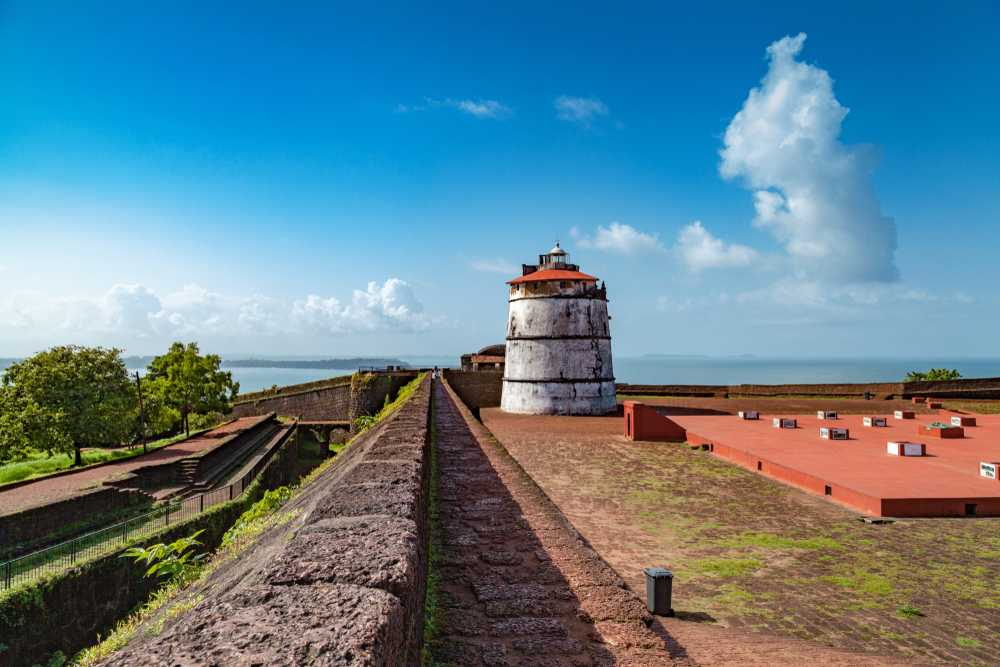
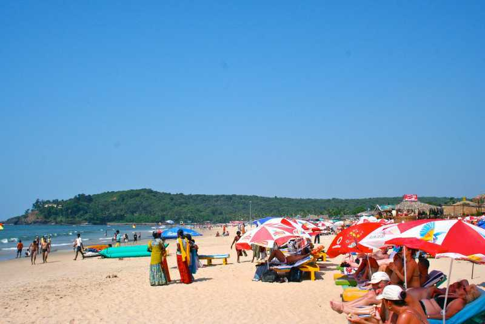
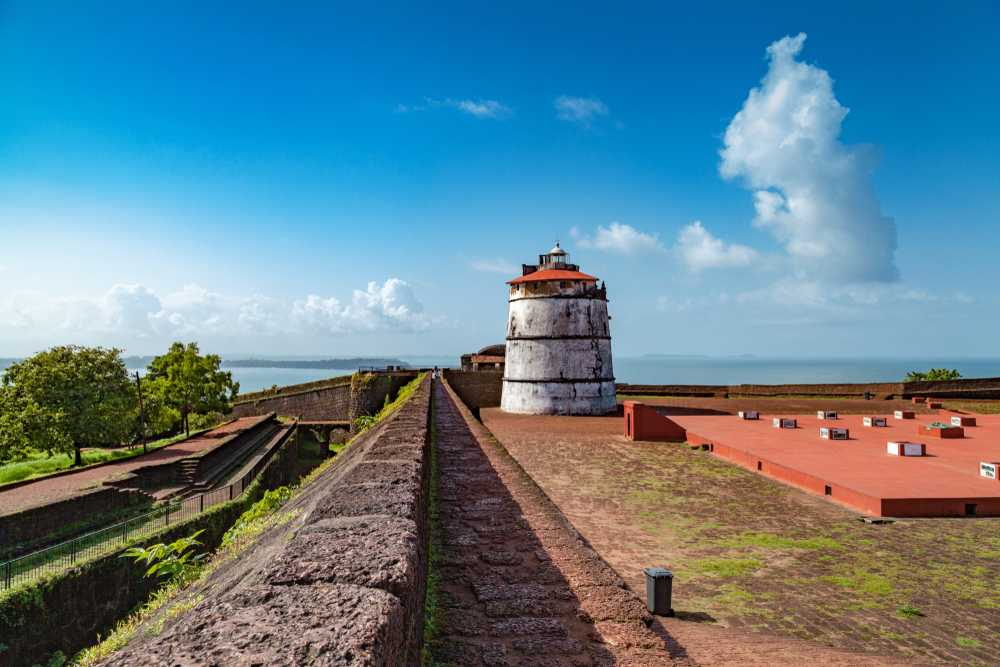
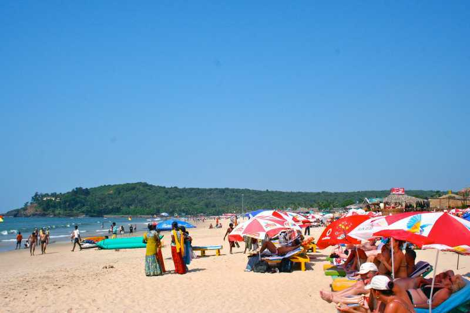
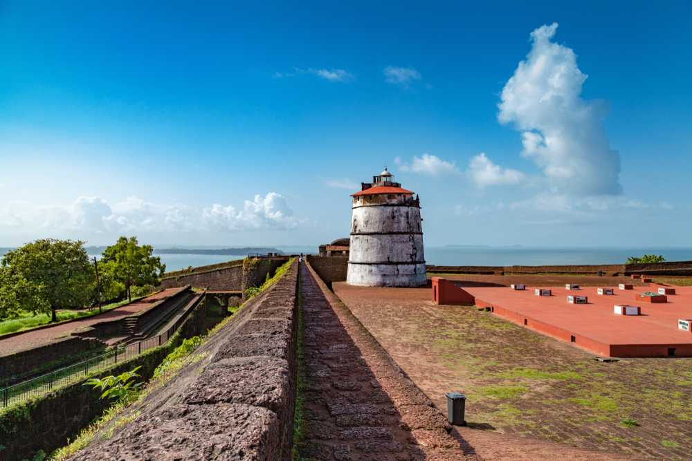
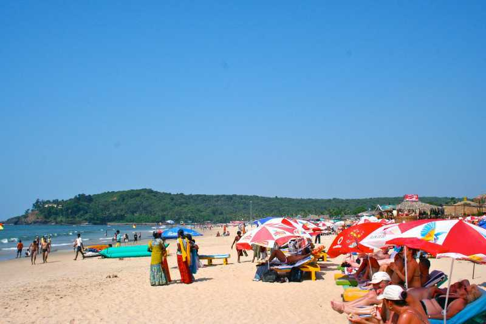
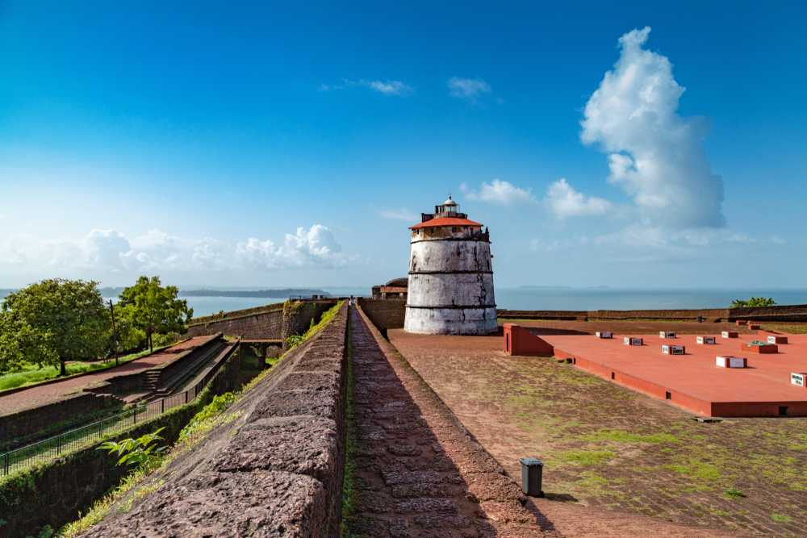
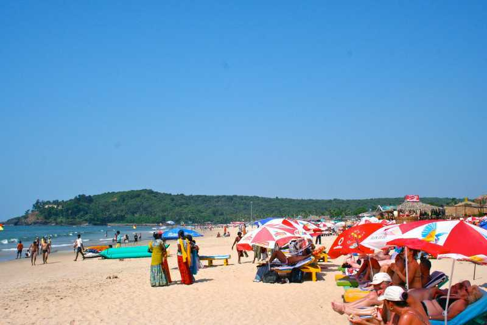

Goa

 







Although planning a trip alone isn’t very interesting, it can certainly be more absorbing. It takes a lot of efforts to identify the right tourist destination that would give you all that you expect on a holiday. Once you have the destination decided, you need to further your research to find out the important tourist places in the destination. Then comes the travel plan and arrangements for accommodation. If your plan is to visit Delhi during your holidays, here are some suggestions that would help you with your plan. Here are places that you must visit in Goa
Situated 15 km from Panjim, Calangute Beach is the longest beach in North Goa, stretching from Candolim to Baga. Due to its sheer size and popularity, it is a hub for tourists and backpackers from all over the world.
Popular as the "Queen of Beaches", the Calangute Beach of Goa is among the top ten bathing beaches in the world. Being one of the busiest and most commercial beaches of Goa, it is swarming with eating joints, shacks and clubs serving cocktails, beer and seafood.
The Basilica of Bom Jesus church is one of a kind in India and is known for its exemplary baroque architecture. Built in the year 1594 and consecrated in 1605, the building of this church coincides with the beginning of Christianity in India. The church is located in Old Goa in Bainguinim about 10 km away from Panjim. The oldest church in Goa, Basilica of Bom Jesus holds the remains of St. Francis Xavier, a special friend of St. Ignatius Loyola with whom he founded the Society of Jesus (Jesuits).
Fort Aguada is an epitome of Portuguese architecture built in the 17th century. Its lighthouse and the fort itself have braved the ravages of time and stand like silent sentinels on the Sinquerim Beach, approximately 18 km from Panjim. Built-in 1612 as a protection from Dutch and Marathas, it was the most prized and crucial fort for the Portuguese and covers the entire peninsula at the southwestern tip of Bardez. The view from the fort is breathtaking as it overlooks the confluence of Mandovi River and the Arabian Sea.
One of the most popular beaches in North Goa, Baga Beach is located close to Calangute beach, around 30 Km North of Panaji. It is so named after the 'Baga creek' which flows into the Arabian Sea. Baga is the perfect destination for you if you wish to witness the excellent nightlife of Goa as signature places such as Britto's, Tito's and Mambos have made their mark in their hearts of party-goers. The shacks come to life in the late evening with some pumping music and mouthwatering food.
Many more...